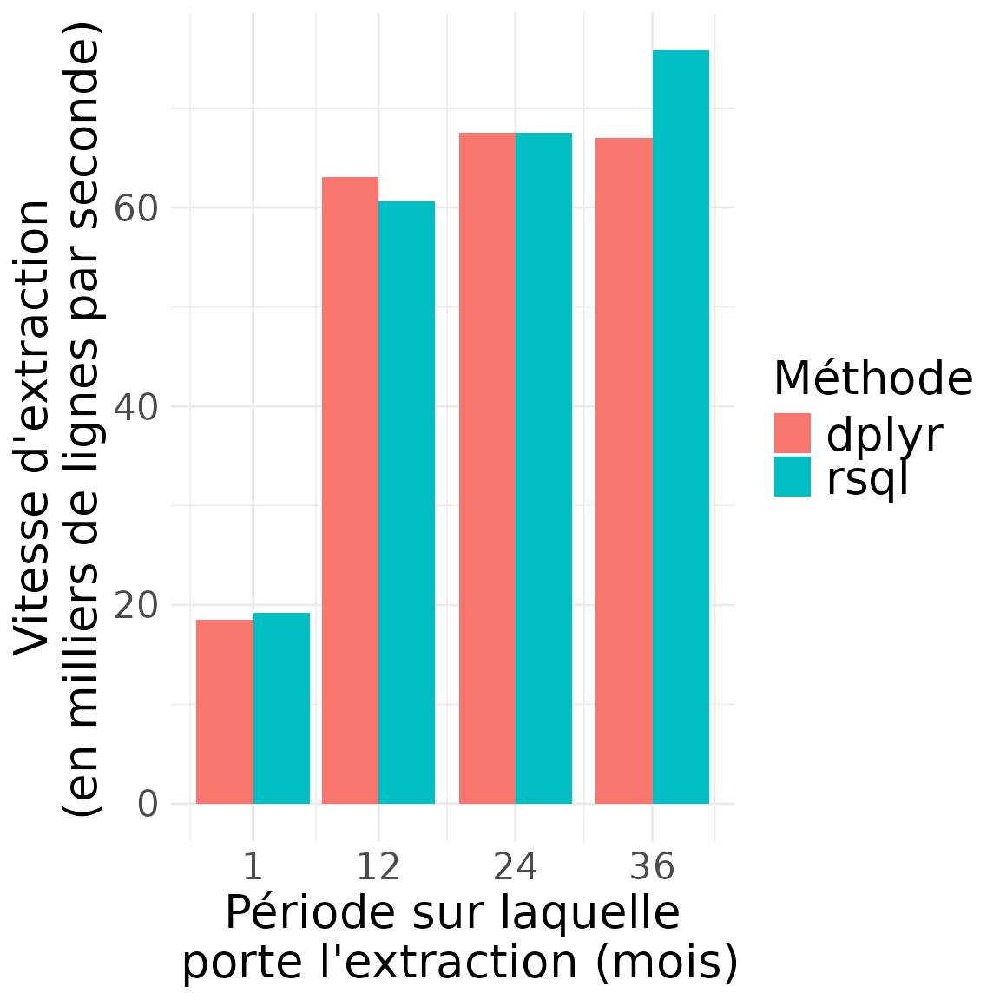

Benchmarking dplyr vs RSQL
Matthieu Doutreligne
2025-01-27
Source:vignettes/benchmark_dplyr_vs_rsql.Rmd
benchmark_dplyr_vs_rsql.RmdMotivation
Question
Y-a-t-il une différence de performance sur le portail entre manipuler
les données avec la syntaxe dplyr ou en injectant du SQL
directement dans une requête de DBI::dbExecute ?
Code de benchmark
Comparaison des performances entre dplyr et
RSQL
library(sndsTools)
# Paramètres d'extraction
atc_vitamine_d_7 <- c("M05BB03", "M05BB04", "A11CC05", "A11CC01", "A12CD51")
atc_vitamine_d_5 <- c("A12AX", "A11JA", "A11BA")
cip_vitamine_d_b <- c(3400935657190, 3400936584969, 3400936923751, 3400934880254)
# Colonnes supplémentaires pour la fonction `extract_drug_dispenses`.
# Ces colonnes sont extraites par défaut dans la fonction `sql_extract_drug_dispenses`.
sup_columns <- c(
"BEN_CMU_TOP",
"BEN_AMA_COD",
"BEN_SEX_COD",
"BEN_RES_DPT",
"FLX_DIS_DTD",
"PRS_ACT_QTE",
"BSE_REM_MNT",
"BSE_PRS_NAT",
"ETE_IND_TAA",
"ETB_EXE_FIN",
"ETE_MCO_DDP",
"PHA_GRD_CND",
"PHA_PRS_IDE",
"PHA_DEC_TOP",
"PHA_DEC_QSU"
)
conn <- connect_oracle()
start_dates <- rep(as.Date("2020-01-01"), 3)
end_dates <- c(
# as.Date("2020-02-01"),
as.Date("2021-01-01"),
as.Date("2022-01-01"),
as.Date("2023-01-01")
)
path2_tmp <- file.path("../inst/extdata")
for (i in seq_along(start_dates)) {
start_date <- start_dates[i]
end_date <- end_dates[i]
message("Extraction pour la période : ", start_date, " - ", end_date)
# benchmark de dplyr
formatted_study_dates <- glue::glue('{format(start_date, "%Y%m%d")}_{format(end_date, "%Y%m%d")}')
dplyr_table_name <- glue::glue("dplyr_{formatted_study_dates}")
time_0_dplyr <- Sys.time()
extract_drug_dispenses(
start_date = start_date,
end_date = end_date,
atc_cod_starts_with_filter = atc_vitamine_d_7,
cip13_cod_filter = cip_vitamine_d_b,
output_table_name = dplyr_table_name,
sup_columns = sup_columns,
conn = conn
)
time_taken_dplyr <- as.numeric(lubridate::as.duration(Sys.time() - time_0_dplyr), "seconds")
n_rows_dplyr <- DBI::dbGetQuery(conn, glue::glue("select count(*) from {dplyr_table_name}"))
# tmp_table_dplyr <- DBI::dbGetQuery(conn, glue::glue("select * from {dplyr_table_name}"))
# tmp_table_path <- file.path(path2_tmp, paste0(dplyr_table_name, ".parquet"))
# arrow::write_parquet(tmp_table_dplyr, tmp_table_path)
dbExecute(conn, glue::glue("DROP TABLE {dplyr_table_name}"))
# benchmark de RSQL
sql_table_name <- glue::glue("sql_{formatted_study_dates}")
time_0_sql <- Sys.time()
sql_extract_drug_dispenses(
start_date = start_date,
end_date = end_date,
atc_cod_starts_with_filter = atc_vitamine_d_7,
cip13_cod_filter = cip_vitamine_d_b,
output_table_name = sql_table_name,
conn = conn
)
time_taken_sql <- as.numeric(lubridate::as.duration(Sys.time() - time_0_sql), "seconds")
n_rows_sql <- DBI::dbGetQuery(conn, glue::glue("select count(*) from {sql_table_name}"))
# tmp_table_sql <- DBI::dbGetQuery(conn, glue::glue("select * from {sql_table_name}"))
# tmp_table_path <- file.path(path2_tmp, paste0(sql_table_name, ".parquet"))
# arrow::write_parquet(tmp_table_sql, tmp_table_path)
# enregistrement des résultats
tmp_timing_results <- data.frame(
start_date = as.character(start_date),
end_date = as.character(end_date),
time_taken_dplyr = time_taken_dplyr,
time_taken_sql = time_taken_sql,
n_rows_dplyr = n_rows_dplyr,
n_rows_sql = n_rows_sql
)
dbExecute(conn, glue::glue("DROP TABLE {sql_table_name}"))
write.table(
tmp_timing_results,
file.path("..", "inst", "extdata", "timing_results.csv"),
append = i > 1,
row.names = FALSE,
col.names = i == 1,
sep = ","
)
}Evaluation de la vitesse d’extraction dplyr en fonction
du nombre de lignes et de colonnes extraites
Le code suivant effectue différent test pour évaluer la sensibilité
de la vitesse d’extraction de dplyr en fonction du nombre
de lignes et de colonnes extraites.
library(sndsTools)
# Paramètres d'extraction
atc_vitamine_d_7 <- c("M05BB03", "M05BB04", "A11CC05", "A11CC01", "A12CD51")
atc_vitamine_d_5 <- c("A12AX", "A11JA", "A11BA")
cip_vitamine_d_b <- c(3400935657190, 3400936584969, 3400936923751, 3400934880254)
# Colonnes supplémentaires pour la fonction `extract_drug_dispenses`.
# Ces colonnes sont extraites par défaut dans la fonction `sql_extract_drug_dispenses`.
columns_to_extract <- c(
"BEN_CMU_TOP",
"BEN_AMA_COD",
"BEN_SEX_COD",
"BEN_RES_DPT",
"FLX_DIS_DTD",
"PRS_ACT_QTE",
"BSE_REM_MNT",
"BSE_PRS_NAT",
"ETE_IND_TAA",
"ETB_EXE_FIN",
"ETE_MCO_DDP",
"PHA_GRD_CND",
"PHA_PRS_IDE",
"PHA_DEC_TOP",
"PHA_DEC_QSU"
)
conn <- connect_oracle()
start_dates <- rep(as.Date("2020-01-01"), 2)
end_dates <- c(
as.Date("2020-02-01"),
as.Date("2021-01-01")
)
columns_to_extract_list_length <- c(5, 10, 15)
for (i in seq_along(start_dates)) {
for (j in seq_along(columns_to_extract_list_length)) {
start_date <- start_dates[i]
end_date <- end_dates[i]
sup_columns <- columns_to_extract[1:columns_to_extract_list_length[j]]
message("Extraction pour la période : ", start_date, " - ", end_date, " avec ", columns_to_extract_list_length[j], " colonnes supplémentaires")
# benchmark de dplyr
formatted_study_dates <- glue::glue(
'{format(start_date, "%Y%m%d")}_{format(end_date, "%Y%m%d")}'
)
dplyr_table_name <- glue::glue("dplyr_{formatted_study_dates}")
time_0_dplyr <- Sys.time()
extract_drug_dispenses(
start_date = start_date,
end_date = end_date,
atc_cod_starts_with_filter = atc_vitamine_d_7,
cip13_cod_filter = cip_vitamine_d_b,
output_table_name = dplyr_table_name,
sup_columns = sup_columns,
conn = conn
)
time_taken_dplyr <- as.numeric(lubridate::as.duration(Sys.time() - time_0_dplyr), "seconds")
df_dplyr <- DBI::dbGetQuery(conn, glue::glue("select * from {dplyr_table_name}"))
n_rows_dplyr <- nrow(df_dplyr)
dbExecute(conn, glue::glue("DROP TABLE {dplyr_table_name}"))
# enregistrement des résultats
tmp_timing_results <- data.frame(
start_date = as.character(start_date),
end_date = as.character(end_date),
time_taken_dplyr = time_taken_dplyr,
n_rows_dplyr = n_rows_dplyr,
n_cols_dplyr = 6 + length(sup_columns)
)
top_create_file <- (i == 1) && (j == 1)
write.table(
tmp_timing_results,
file.path("..", "inst", "extdata", "timing_results_cols.csv"),
append = !top_create_file,
row.names = FALSE,
col.names = top_create_file,
sep = ","
)
}
}Résultats
benchmark dplyr/RSQL
library(sndsTools)
path2pkg_data <- system.file("extdata", package = "sndsTools")
# path2pkg_data <- "../inst/extdata"
timing_results <- read.csv(file.path(path2pkg_data, "benchmark_rsql_dplyr.csv")) |>
dplyr::mutate(
time_taken_dplyr_minutes = time_taken_dplyr / 60,
time_taken_sql_minutes = time_taken_sql / 60,
query_period_days = as.numeric(as.Date(end_date) - as.Date(start_date)),
query_period_months = as.integer(query_period_days / 30),
speed_dplyr_nrows_sec = n_rows_dplyr / time_taken_dplyr,
speed_sql_nrows_sec = n_rows_sql / time_taken_sql
)## Warning in read.table(file = file, header = header, sep = sep, quote = quote, :
## incomplete final line found by readTableHeader on
## '/home/runner/work/_temp/Library/sndsTools/extdata/benchmark_rsql_dplyr.csv'
timing_results## start_date end_date time_taken_dplyr time_taken_sql n_rows_dplyr n_rows_sql
## 1 2020-01-01 2020-02-01 235.2178 226.4485 4344991 4344991
## 2 2020-01-01 2021-01-01 763.0326 794.2415 48131314 48131314
## 3 2020-01-01 2022-01-01 1613.4070 1613.7409 108979756 108979756
## 4 2020-01-01 2023-01-01 2558.6327 2260.9095 171408536 171408536
## time_taken_dplyr_minutes time_taken_sql_minutes query_period_days
## 1 3.920297 3.774142 31
## 2 12.717210 13.237359 366
## 3 26.890116 26.895682 731
## 4 42.643879 37.681825 1096
## query_period_months speed_dplyr_nrows_sec speed_sql_nrows_sec
## 1 1 18472.20 19187.54
## 2 12 63078.97 60600.35
## 3 24 67546.35 67532.37
## 4 36 66992.24 75813.98Durée des extractions
# plot time results
library(ggplot2)
label_size <- 20
x_breaks <- unique(timing_results$query_period_months)
timing_results |>
dplyr::rename(
dplyr = time_taken_dplyr_minutes, rsql = time_taken_sql_minutes
) |>
tidyr::pivot_longer(
cols = c(dplyr, rsql),
names_to = "Méthode",
values_to = "duration"
) |>
ggplot(aes(x = query_period_months, y = duration, fill = Méthode)) +
geom_col(position = "dodge") +
scale_x_continuous(breaks = x_breaks) +
labs(
x = "Période sur laquelle\n porte l'extraction (mois)",
y = "Temps pris par l'extraction\n sur le portail (minutes)",
fill = "Méthode"
) +
theme_minimal() +
theme(
text = element_text(size = label_size),
axis.title = element_text(size = label_size),
legend.title = element_text(size = label_size),
legend.text = element_text(size = label_size)
)
Contenu des extractions (nombre de lignes)
# plot time results
library(ggplot2)
label_size <- 20
timing_results |>
dplyr::rename(dplyr = n_rows_dplyr, rsql = n_rows_sql) |>
tidyr::pivot_longer(
cols = c(dplyr, rsql),
names_to = "Méthode",
values_to = "n_rows"
) |>
ggplot(aes(x = query_period_months, y = n_rows / 1e6, fill = Méthode)) +
geom_col(position = "dodge") +
scale_x_continuous(breaks = x_breaks) +
labs(
x = "Période sur laquelle\n porte l'extraction (mois)",
y = "Nombres de lignes \ndans l'extraction (millions)",
fill = "Méthode"
) +
theme_minimal() +
theme(
text = element_text(size = label_size),
axis.title = element_text(size = label_size),
legend.title = element_text(size = label_size),
legend.text = element_text(size = label_size)
)
Vitesse d’extraction (en nombre de lignes extraites par minute)
# plot time results
library(ggplot2)
label_size <- 20
timing_results |>
dplyr::rename(dplyr = speed_dplyr_nrows_sec, rsql = speed_sql_nrows_sec) |>
tidyr::pivot_longer(
cols = c(dplyr, rsql),
names_to = "Méthode",
values_to = "speed_nrows_sec"
) |>
ggplot(aes(x = query_period_months, y = speed_nrows_sec / 1000, fill = Méthode)) +
geom_col(position = "dodge") +
scale_x_continuous(breaks = x_breaks) +
labs(
x = "Période sur laquelle\n porte l'extraction (mois)",
y = "Vitesse d'extraction\n (en milliers de lignes par seconde)",
fill = "Méthode"
) +
theme_minimal() +
theme(
text = element_text(size = label_size),
axis.title = element_text(size = label_size),
legend.title = element_text(size = label_size),
legend.text = element_text(size = label_size)
)
Résultats du benchmark en nombres de lignes x colonnes
Ce second benchmark étudie la différence pouvant être observée pour une requête donnée (effectuée en dplyr) en fonction du nombre de colonnes extraites pour la requête étudiée.
path2pkg_data <- system.file("extdata", package = "sndsTools")
# path2pkg_data <- "inst/extdata"
label_fill <- "Nombres\nde colonnes\n extraites"
timing_results_cols <- read.csv(
file.path(
path2pkg_data, "benchmark_dplyr_speed_per_cols_rows.csv"
)
) |>
dplyr::mutate(
time_taken_dplyr_minutes = time_taken_dplyr / 60,
n_rows_cols = n_rows_dplyr * n_cols_dplyr,
period_months = as.numeric(
as.Date(end_date) - as.Date(start_date)
) %/% 30,
!!sym(label_fill) := as.character(n_cols_dplyr)
)
timing_results_cols## start_date end_date time_taken_dplyr n_rows_dplyr n_cols_dplyr
## 1 2020-01-01 2020-02-01 252.7808 4344565 11
## 2 2020-01-01 2020-02-01 253.2735 4344990 16
## 3 2020-01-01 2020-02-01 272.1631 4344991 21
## 4 2020-01-01 2021-01-01 727.3382 48127239 11
## 5 2020-01-01 2021-01-01 841.7315 48131304 16
## 6 2020-01-01 2021-01-01 967.4122 48131314 21
## time_taken_dplyr_minutes n_rows_cols period_months
## 1 4.213014 47790215 1
## 2 4.221225 69519840 1
## 3 4.536051 91244811 1
## 4 12.122303 529399629 12
## 5 14.028858 770100864 12
## 6 16.123537 1010757594 12
## Nombres\nde colonnes\n extraites
## 1 11
## 2 16
## 3 21
## 4 11
## 5 16
## 6 21
# plot time results
library(ggplot2)
label_size <- 20
ggplot(timing_results_cols,
aes(x = as.character(period_months), y = time_taken_dplyr_minutes, fill = !!sym(label_fill)),
color = !!sym(label_fill)
) +
geom_col(position = "dodge") +
labs(
x = "Période d'extraction (mois)",
y = "Temps d'extraction\n (minutes)",
fill = label_fill
) +
theme(
text = element_text(size = label_size),
axis.title = element_text(size = label_size),
legend.title = element_text(size = label_size),
legend.text = element_text(size = label_size)
)## Warning in fortify(data, ...): Arguments in `...` must be used.
## ✖ Problematic argument:
## • color = !!sym(label_fill)
## ℹ Did you misspell an argument name?Attention: Le temps supplémentaire pris par l’extraction de colonnes supplémentaires peut avoir deux causes :
des nombres de lignes plus élevés du fait d’un distinct sur plus de colonnes.
des colonnes supplémentaires qui prennent plus de temps à extraire.